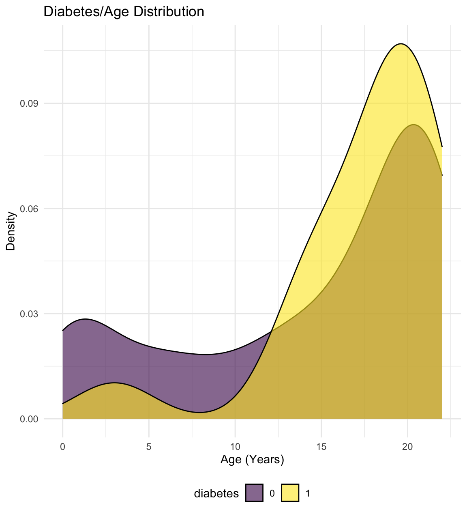
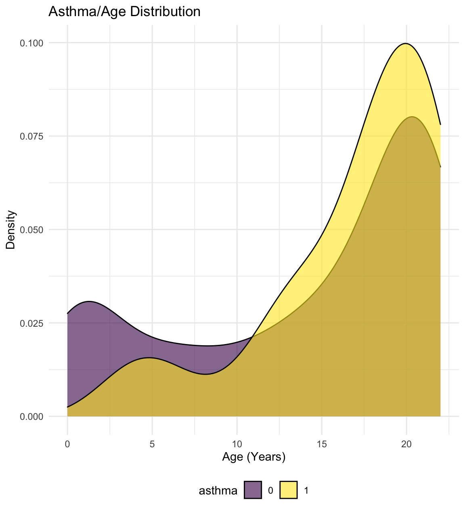
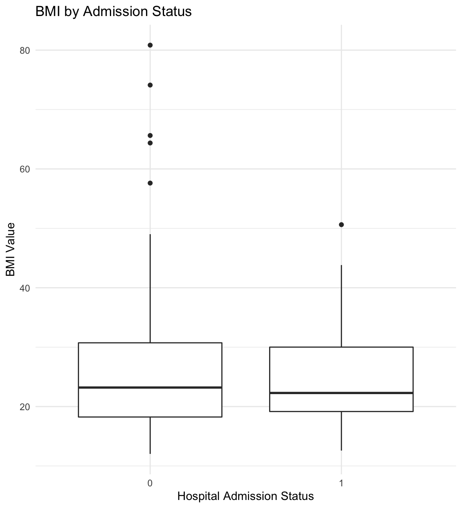
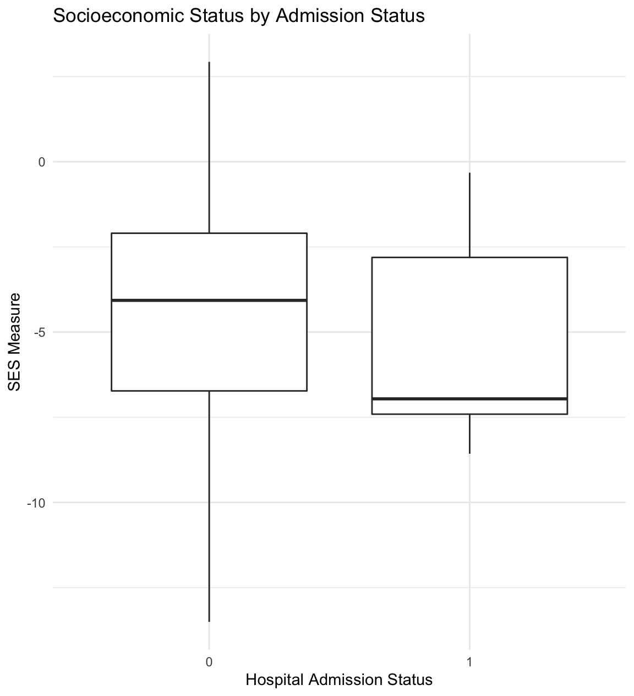

Exploratory Analysis
Setup
library(tidyverse)
library(aod)
library(patchwork)
library(ResourceSelection)
knitr::opts_chunk$set(
fig.width = 6,
fig.asp = 1.1,
out.width = "100%")
theme_set(theme_minimal() + theme(legend.position = "bottom"))
options(
ggplot2.continuous.colour = "viridis",
ggplot2.continuous.fill = "viridis")
scale_colour_discrete = scale_color_viridis_d
scale_fill_discrete = scale_fill_viridis_d
knitr::opts_chunk$set(comment = NA, message = FALSE, warning = FALSE, echo = TRUE)Load data and tidy.
ped_covid =
read_csv("./data/p8105_final_ped_covid.csv") %>%
mutate(
ethnicity_race = case_when(
race == "R3 Black or African-American" ~ "black",
race == "R2 Asian" ~ "asian",
race == "R5 White" ~ "caucasian",
race == "R1 American Indian or Alaska Native" ~ "american indian",
race == "Multiple Selected" ~ "multiple",
ethnicity == "E1 Spanish/Hispanic/Latino" ~ "latino"
)
) %>%
mutate(
asthma = replace_na(asthma_dx, 0),
asthma = str_replace(asthma, ".*J.*", "1"),
diabetes = replace_na(diabetes_dx, 0),
diabetes = str_replace(diabetes, ".*E.*", "1"),
zip = as.character(zip_code_set),
service = outcomeadmission_admission_1inpatient_admit_service,
ed = ed_yes_no_0_365_before,
admission_dx = admission_apr_drg,
icu = icu_yes_no
) %>%
mutate(obesity = case_when(
bmi_value >= 30 ~ "1",
bmi_value < 30 ~"0"
))# Merge zipcode data with latitude and longitude.
zipcode_df =
usa::zipcodes
ped_covid =
left_join(ped_covid, zipcode_df, by = "zip") %>%
select(admitted, age, gender, ses, zip, eventdatetime, bmi_value, icu, icu_date_time,
systolic_bp_value, ethnicity_race, asthma, diabetes, zip, service, ed, admission_dx,
city.y, obesity, lat, long) %>%
mutate_at(c("admitted", "icu", "ethnicity_race", "asthma", "diabetes",
"ed", "city.y", "obesity"), as.factor) %>%
mutate(
gender = factor(gender, levels = c("F", "M")),
ethnicity_race = factor(ethnicity_race, levels = c("caucasian", "black", "latino", "asian", "american indian", "multiple", "NA"))
) %>%
rename(city = city.y) Dataset exploration
This is a dataset of 375 pediatric patients 0 to 23 years of age with COVID-19 infection. First, we explore the data by generating various ggplots.
Age
There appears to be a bimodal distribution of hospital admission as a function of age. Among infants and toddlers less than 5 years of age who test positive for COVID-19, more are admitted than not admitted. However, after 16 years of age, hospitalizations for COVID-19 infection appear to be less than non-hospitalizations.
Some pediatric patients require admission to the Intensive Care Unit (ICU). Fewer infants and toddlers with COVID-19 infection require admission to the ICU until about 3 years of age. Beginning at 10 years of age, there seems to be a steeper rise in the density of ICU admissions for children with COVID-19 infection compared to non-ICU admissions.
ped_covid %>%
ggplot(aes(x = age, fill = admitted)) +
geom_density(alpha = .6) +
labs(
title = "Admittance/Age Distribution",
x = "Age (Years)",
y = "Density") +
theme(legend.position = "bottom")
ped_covid %>%
ggplot(aes(x = age, fill = icu)) +
geom_density(alpha = .6) +
labs(
title = "ICU/Age Distribution",
x = "Age (Years)",
y = "Density") +
theme(legend.position = "bottom")
Obesity, diabetes, and asthma
The distribution of obesity, diabetes, and asthma diagnoses in pediatric patients with COVID-19 infection by age are show below. Obesity, as defined as a body mass index (BMI) of > 30, is general not present at ages less than 10 years. After 10 years, the prevalence of obesity increases. This is generally true for diabetes and asthma as well.
ped_covid %>%
ggplot(aes(x = age, fill = obesity)) +
geom_density(alpha = .6) +
labs(
title = "Obesity/Age Distribution",
x = "Age (Years)",
y = "Density") +
theme(legend.position = "bottom")
ped_covid %>%
ggplot(aes(x = age, fill = diabetes)) +
geom_density(alpha = .6) +
labs(
title = "Diabetes/Age Distribution",
x = "Age (Years)",
y = "Density") +
theme(legend.position = "bottom")
ped_covid %>%
ggplot(aes(x = age, fill = asthma)) +
geom_density(alpha = .6) +
labs(
title = "Asthma/Age Distribution",
x = "Age (Years)",
y = "Density") +
theme(legend.position = "bottom")
Box plots
Below, we explore first systolic blood pressure, BMI, and socioeconomic status (SES) by admission status. The median first systolic pressure is higher among admitted patients compared to non-admitted patients. BMI appears to be similar, with some high BMI outliers in the non-hospitalized group. Median SES is lower among admitted patients.
ped_covid %>%
ggplot(aes(x = icu, y = systolic_bp_value)) +
geom_boxplot() +
labs(
title = "Systolic Blood Pressure by Admission Status",
x = "Hospital Admission Status",
y = "Systolic Blood Pressure")
ped_covid %>%
ggplot(aes(x = icu, y = bmi_value)) +
geom_boxplot() +
labs(
title = "BMI by Admission Status",
x = "Hospital Admission Status",
y = "BMI Value")
ped_covid %>%
ggplot(aes(x = icu, y = ses)) +
geom_boxplot() +
labs(
title = "Socioeconomic Status by Admission Status",
x = "Hospital Admission Status",
y = "SES Measure") ```
Possible Models
##consider recoding to have caucasian race as reference - I believe this may generates more interpretible odds ratios. I have included the code that I wrote at the end of the visualizations.rmd.
##Also, for ease of readability, consider OR as first column, then p values, then 95% CIs?
jerry_model =
glm(
admitted ~ age + gender + ethnicity_race + asthma + diabetes + obesity,
data = ped_covid,
family = binomial()
) %>%
broom::tidy() %>%
mutate(
OR = exp(estimate),
CI_lower = exp(estimate - 1.96 * std.error),
CI_upper = exp(estimate + 1.96 * std.error)
) %>%
select(term, OR, starts_with("CI"), p.value) %>%
knitr::kable(digits = 3)initial_fit =
glm(admitted ~ age + gender + ethnicity_race + asthma + diabetes + obesity,
family = binomial(link = "logit"),
data = ped_covid) %>%
broom::tidy() %>%
mutate(OR = exp(estimate)) %>%
select(term, p.value, everything()) %>%
knitr::kable(digits = 3)
initial_fit| term | p.value | estimate | std.error | statistic | OR |
|---|---|---|---|---|---|
| (Intercept) | 0.034 | 1.629 | 0.767 | 2.124 | 5.101 |
| age | 0.005 | -0.064 | 0.023 | -2.793 | 0.938 |
| genderM | 0.280 | -0.318 | 0.294 | -1.081 | 0.728 |
| ethnicity_raceblack | 0.118 | -1.089 | 0.697 | -1.564 | 0.336 |
| ethnicity_racelatino | 0.113 | -1.068 | 0.673 | -1.586 | 0.344 |
| ethnicity_raceasian | 0.266 | -1.131 | 1.018 | -1.112 | 0.323 |
| ethnicity_raceamerican indian | 0.986 | -15.872 | 882.744 | -0.018 | 0.000 |
| asthma1 | 0.840 | -0.071 | 0.352 | -0.202 | 0.931 |
| diabetes1 | 0.035 | 1.325 | 0.628 | 2.111 | 3.764 |
| obesity1 | 0.032 | 0.773 | 0.360 | 2.148 | 2.166 |
# hl <- hoslem.test(initial_fit$admitted, fitted(initial_fit), g = 10)
# hl
# wald.test(b = coef(initial_fit), Sigma = vcov(initial_fit), Terms = 4:8)complex_fit =
glm(admitted ~ age + gender + ethnicity_race + asthma + diabetes + bmi_value + systolic_bp_value + ses,
family = binomial(link = "logit"),
data = ped_covid) %>%
broom::tidy() %>%
mutate(OR = exp(estimate)) %>%
select(term, p.value, everything()) %>%
knitr::kable(digits = 3)
complex_fit| term | p.value | estimate | std.error | statistic | OR |
|---|---|---|---|---|---|
| (Intercept) | 0.996 | 18.449 | 4081.440 | 0.005 | 1.029231e+08 |
| age | 0.202 | -0.138 | 0.108 | -1.276 | 8.710000e-01 |
| genderM | 0.178 | -1.088 | 0.808 | -1.347 | 3.370000e-01 |
| ethnicity_raceblack | 0.997 | -17.730 | 4081.438 | -0.004 | 0.000000e+00 |
| ethnicity_racelatino | 0.997 | -17.559 | 4081.438 | -0.004 | 0.000000e+00 |
| ethnicity_raceasian | 1.000 | -0.576 | 11502.475 | 0.000 | 5.620000e-01 |
| asthma1 | 0.495 | 0.649 | 0.950 | 0.682 | 1.913000e+00 |
| diabetes1 | 0.995 | 17.668 | 3036.851 | 0.006 | 4.711645e+07 |
| bmi_value | 0.246 | 0.064 | 0.055 | 1.160 | 1.066000e+00 |
| systolic_bp_value | 0.688 | 0.013 | 0.033 | 0.402 | 1.014000e+00 |
| ses | 0.915 | -0.015 | 0.142 | -0.107 | 9.850000e-01 |
play_fit =
glm(admitted ~ age + gender + asthma + diabetes + bmi_value + systolic_bp_value + ses,
family = binomial(link = "logit"),
data = ped_covid) %>%
broom::tidy() %>%
mutate(OR = exp(estimate)) %>%
select(term, p.value, everything()) %>%
knitr::kable(digits = 3)
play_fit| term | p.value | estimate | std.error | statistic | OR |
|---|---|---|---|---|---|
| (Intercept) | 0.665 | 1.460 | 3.369 | 0.433 | 4.307 |
| age | 0.132 | -0.150 | 0.100 | -1.508 | 0.860 |
| genderM | 0.250 | -0.922 | 0.802 | -1.150 | 0.398 |
| asthma1 | 0.460 | 0.670 | 0.908 | 0.738 | 1.954 |
| diabetes1 | 0.992 | 16.932 | 1740.922 | 0.010 | 22563376.550 |
| bmi_value | 0.183 | 0.068 | 0.051 | 1.331 | 1.070 |
| systolic_bp_value | 0.777 | 0.009 | 0.032 | 0.283 | 1.009 |
| ses | 0.811 | -0.032 | 0.136 | -0.239 | 0.968 |
Asthma and Diabetes seem to be important predictors
icu1_fit =
glm(icu ~ age + gender + ethnicity_race + asthma + diabetes + obesity,
family = binomial(link = "logit"),
data = ped_covid) %>%
broom::tidy() %>%
mutate(OR = exp(estimate)) %>%
select(term, p.value, everything()) %>%
knitr::kable(digits = 3)
icu1_fit| term | p.value | estimate | std.error | statistic | OR |
|---|---|---|---|---|---|
| (Intercept) | 0.026 | -3.103 | 1.396 | -2.222 | 0.045 |
| age | 0.802 | -0.011 | 0.044 | -0.250 | 0.989 |
| genderM | 0.567 | 0.319 | 0.557 | 0.572 | 1.376 |
| ethnicity_raceblack | 0.594 | 0.669 | 1.254 | 0.533 | 1.952 |
| ethnicity_racelatino | 0.766 | 0.362 | 1.213 | 0.298 | 1.436 |
| ethnicity_raceasian | 0.992 | -14.378 | 1489.071 | -0.010 | 0.000 |
| ethnicity_raceamerican indian | 0.997 | -14.781 | 3956.181 | -0.004 | 0.000 |
| asthma1 | 0.503 | -0.463 | 0.691 | -0.670 | 0.630 |
| diabetes1 | 0.000 | 2.650 | 0.677 | 3.912 | 14.147 |
| obesity1 | 0.709 | -0.271 | 0.727 | -0.373 | 0.763 |
icu2_fit =
glm(icu ~ age + gender + ethnicity_race + asthma + diabetes + bmi_value + systolic_bp_value + ses,
family = binomial(link = "logit"),
data = ped_covid) %>%
broom::tidy() %>%
mutate(OR = exp(estimate)) %>%
select(term, p.value, everything()) %>%
knitr::kable(digits = 3)
icu2_fit| term | p.value | estimate | std.error | statistic | OR |
|---|---|---|---|---|---|
| (Intercept) | 0.994 | -16.299 | 2351.533 | -0.007 | 0.000000e+00 |
| age | 0.432 | -0.113 | 0.143 | -0.785 | 8.940000e-01 |
| genderM | 0.985 | 0.022 | 1.184 | 0.019 | 1.023000e+00 |
| ethnicity_raceblack | 0.994 | 16.711 | 2351.529 | 0.007 | 1.809267e+07 |
| ethnicity_racelatino | 0.994 | 18.863 | 2351.529 | 0.008 | 1.557080e+08 |
| ethnicity_raceasian | 1.000 | 1.000 | 6933.578 | 0.000 | 2.718000e+00 |
| asthma1 | 0.928 | 0.140 | 1.544 | 0.091 | 1.150000e+00 |
| diabetes1 | 0.002 | 5.024 | 1.645 | 3.053 | 1.520480e+02 |
| bmi_value | 0.260 | -0.064 | 0.057 | -1.125 | 9.380000e-01 |
| systolic_bp_value | 0.728 | -0.016 | 0.046 | -0.348 | 9.840000e-01 |
| ses | 0.942 | 0.015 | 0.204 | 0.073 | 1.015000e+00 |
icu3_fit =
glm(icu ~ age + gender + asthma + diabetes + bmi_value + systolic_bp_value + ses,
family = binomial(link = "logit"),
data = ped_covid) %>%
broom::tidy() %>%
mutate(OR = exp(estimate)) %>%
select(term, p.value, everything()) %>%
knitr::kable(digits = 3)
icu3_fit| term | p.value | estimate | std.error | statistic | OR |
|---|---|---|---|---|---|
| (Intercept) | 0.391 | 3.508 | 4.088 | 0.858 | 33.388 |
| age | 0.577 | -0.067 | 0.120 | -0.557 | 0.935 |
| genderM | 0.738 | -0.344 | 1.029 | -0.334 | 0.709 |
| asthma1 | 0.259 | -1.538 | 1.361 | -1.130 | 0.215 |
| diabetes1 | 0.001 | 4.728 | 1.376 | 3.436 | 113.066 |
| bmi_value | 0.512 | -0.029 | 0.044 | -0.656 | 0.971 |
| systolic_bp_value | 0.294 | -0.044 | 0.042 | -1.049 | 0.957 |
| ses | 0.576 | -0.093 | 0.167 | -0.559 | 0.911 |